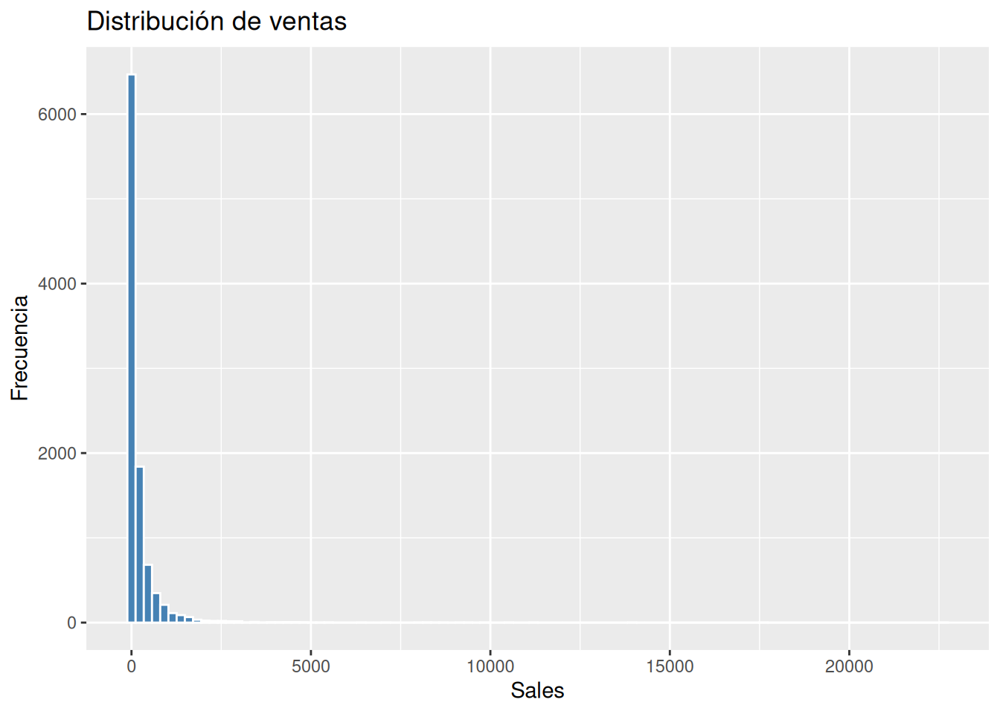
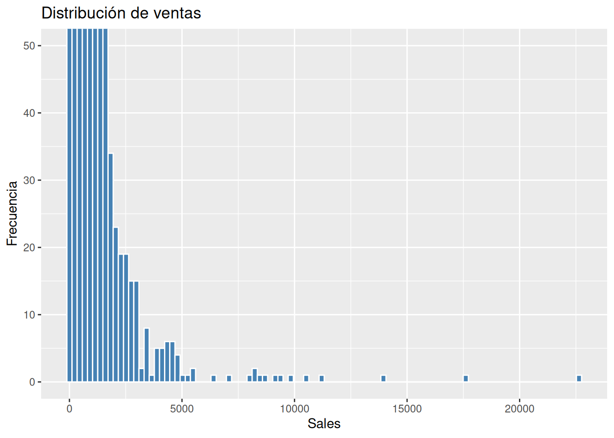
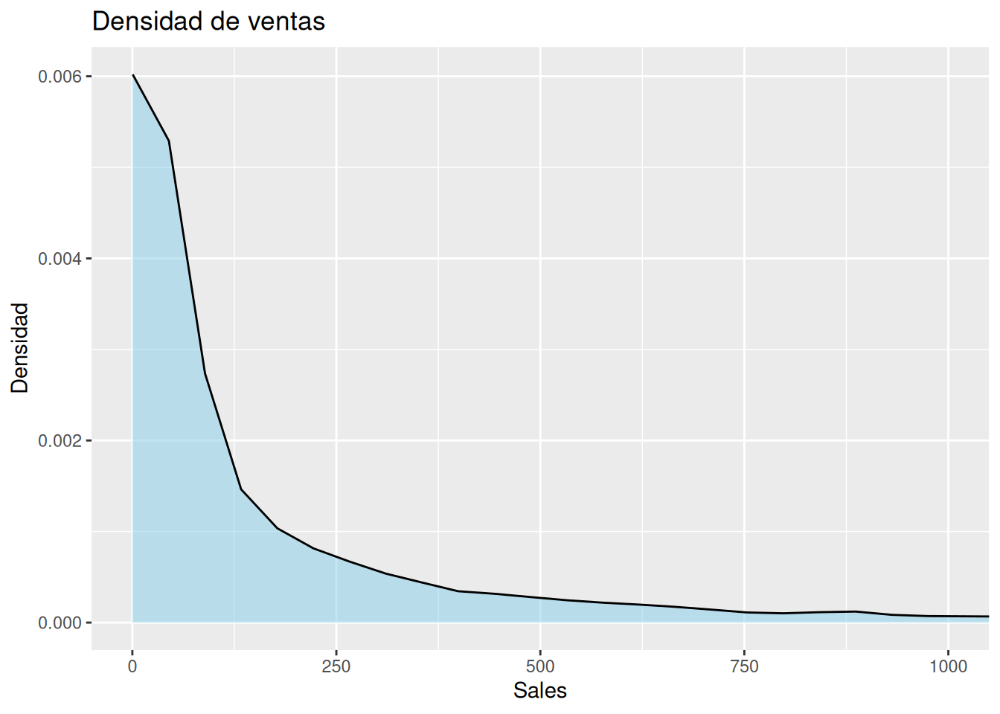
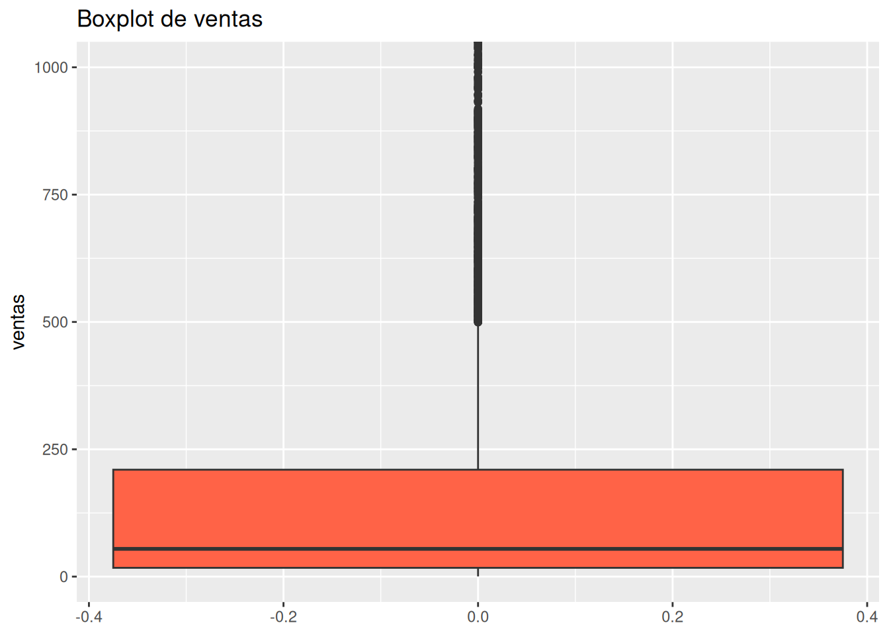
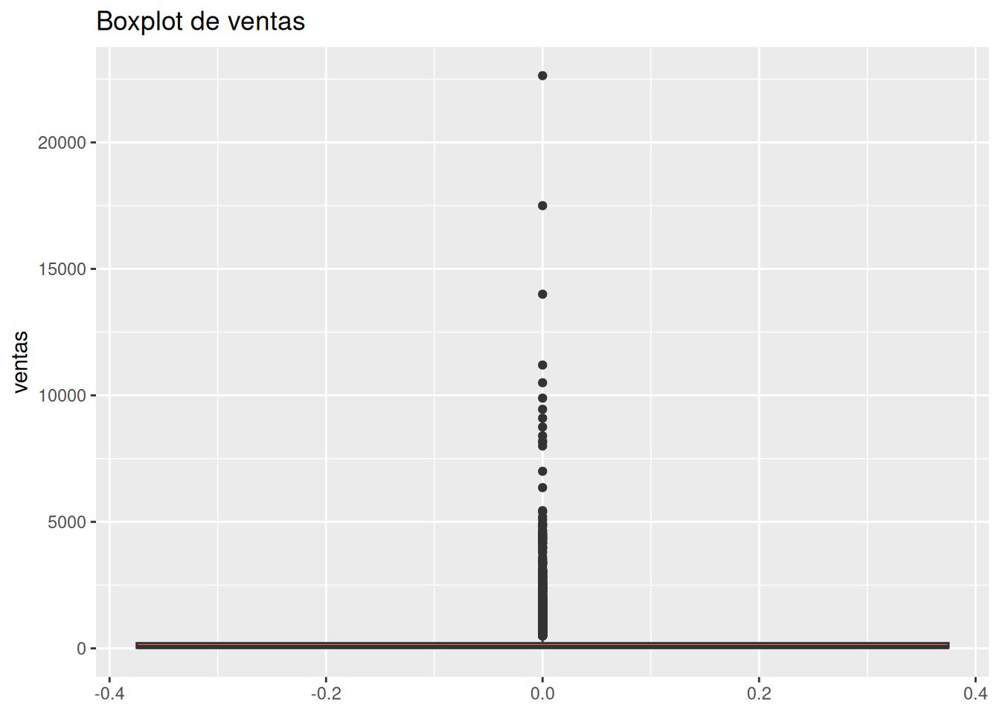
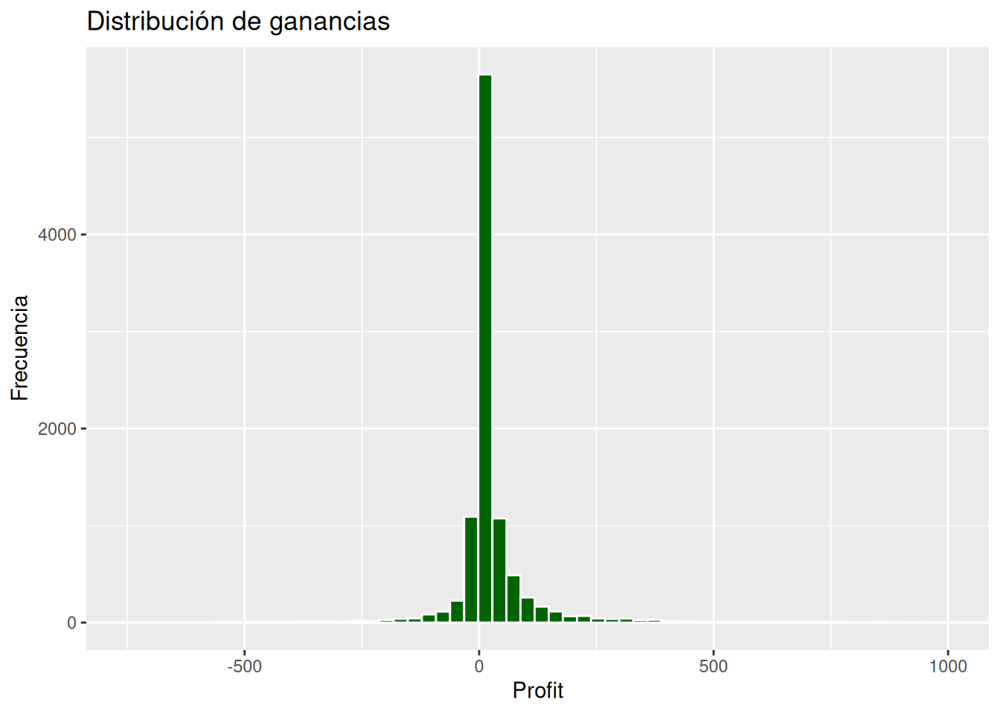
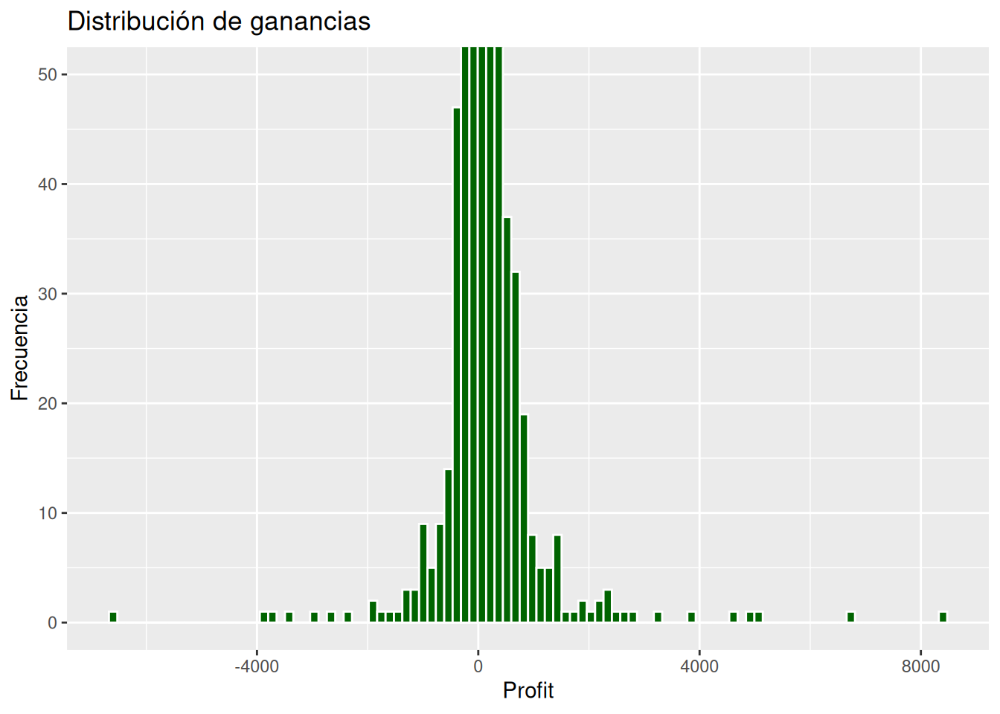
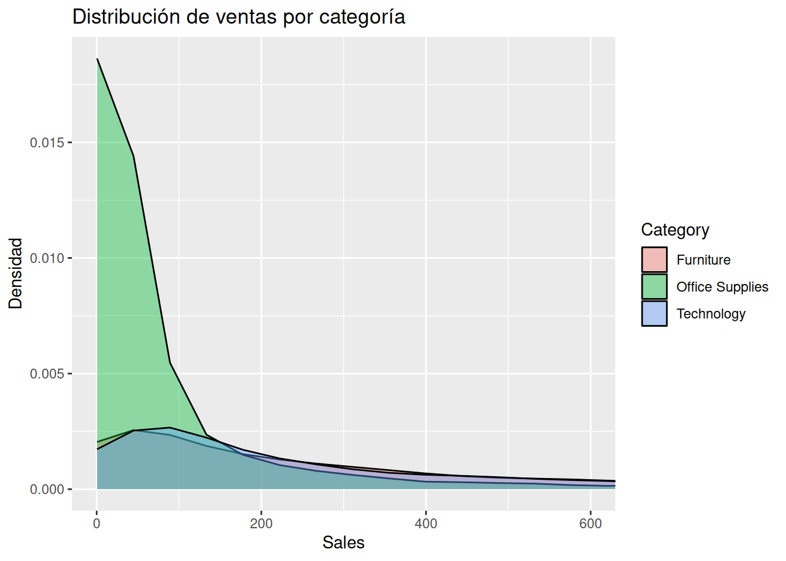

Sales Profit Discount Quantity
Min. : 0.444 Min. :-6599.978 Min. :0.0000 Min. : 1.00
1st Qu.: 17.280 1st Qu.: 1.729 1st Qu.:0.0000 1st Qu.: 2.00
Median : 54.490 Median : 8.666 Median :0.2000 Median : 3.00
Mean : 229.858 Mean : 28.657 Mean :0.1562 Mean : 3.79
3rd Qu.: 209.940 3rd Qu.: 29.364 3rd Qu.:0.2000 3rd Qu.: 5.00
Max. :22638.480 Max. : 8399.976 Max. :0.8000 Max. :14.00
4. La distribución de las ventas
Comencemos con una pregunta simple:
¿Cómo se distribuyen realmente las ventas?
Histograma
Distribución general de las ventas
# Distribución de la ventasggplot(sales, aes(x = Sales)) +geom_histogram(bins =100,fill ="steelblue",color ="white" ) +labs(title ="Distribución de ventas",x ="Sales",y ="Frecuencia" )

Distribución general de las ventas hecha zoom para poder ver los valores atípicos principalmente en el eje X de Sales
# Distribución de la ventasggplot(sales, aes(x = Sales)) +geom_histogram(bins =100,fill ="steelblue",color ="white" ) +#coord_cartesian(xlim = c(0, 1000)) +coord_cartesian(ylim =c(0, 50)) +labs(title ="Distribución de ventas",x ="Sales",y ="Frecuencia" )

¿Qué estamos viendo?
Este gráfico suele mostrar algo muy común en negocios reales:
muchísimas ventas pequeñas,
algunas ventas medianas,
pocas ventas extremadamente grandes.
La distribución normalmente aparece:
sesgada hacia la derecha,
con una cola larga,
y con valores extremos importantes.
Esto significa que:
unas pocas ventas grandes pueden influir muchísimo en el promedio.
5. Densidad: una visión más suave de la distribución
Los histogramas son útiles, pero a veces la forma general se aprecia mejor con una curva de densidad.
# Densidad de las ventas hecha zoom en el eje x de # las ventas para poder apreciar la forma de la# distribuciónggplot(sales, aes(x = Sales)) +geom_density(fill ="skyblue",alpha =0.5 ) +coord_cartesian(xlim =c(0, 1000)) +labs(title ="Densidad de ventas",x ="Sales",y ="Densidad" )

Interpretación intuitiva
Una curva de densidad nos ayuda a visualizar:
dónde se concentran los datos,
qué regiones son más plausibles,
y qué valores son relativamente raros.
No representa probabilidades exactas individuales.
Representa algo más intuitivo:
zonas donde los datos tienden a acumularse.
6. Promedio vs mediana
Ahora aparece una pregunta importante.
Si las ventas tienen valores extremos grandes:
¿el promedio sigue representando bien al negocio?
Calculemos promedio y mediana.
# Resumir las ventas por media y medianasales %>%summarise(media_sales =mean(Sales),mediana_sales =median(Sales) )
Los boxplots son excelentes para visualizar dispersión y cuantiles.
Versión del diagrama con zoom para poder observar la mediana
# Diagrama de caja de las ventasggplot(sales, aes(y = Sales)) +geom_boxplot(fill ="tomato") +coord_cartesian(ylim =c(0, 1000)) +labs(title ="Boxplot de ventas",y ="ventas" )

Versión del diagrama de caja sin zoom para poder observar la dispersión
# Diagrama de caja de las ventasggplot(sales, aes(y = Sales)) +geom_boxplot(fill ="tomato") +labs(title ="Boxplot de ventas",y ="ventas" )

Interpretación intuitiva
El boxplot resume:
mediana,
dispersión,
rango típico,
posibles valores extremos.
Nos ayuda a pensar rápidamente:
¿qué tan estable o inestable es el sistema?
9. Distribución de ganancias
Ahora analicemos Profit.
# Distribución de las ganancias con zoom en el eje Xggplot(sales, aes(x = Profit)) +geom_histogram(bins =500,fill ="darkgreen",color ="white" ) +coord_cartesian(xlim =c(-750, 1000)) +labs(title ="Distribución de ganancias",x ="Profit",y ="Frecuencia" )

# Distribución de las ganancias con zoom en el eje Yggplot(sales, aes(x = Profit)) +geom_histogram(bins =100,fill ="darkgreen",color ="white" ) +coord_cartesian(ylim =c(0, 50)) +labs(title ="Distribución de ganancias",x ="Profit",y ="Frecuencia" )

Aquí suele aparecer algo muy interesante:
existen ganancias positivas,
pero también pérdidas.
Esto es extremadamente importante en negocios reales.
Una empresa puede tener ventas altas y aun así experimentar pérdidas frecuentes en ciertas operaciones.
10. Comparando categorías
Las distribuciones también permiten comparar segmentos del negocio.
# Diagrama de densidad de las ventas, coloreado por Category# y con zoom en el eje Xggplot(sales, aes(x = Sales, fill = Category)) +geom_density(alpha =0.4) +coord_cartesian(xlim =c(0, 600)) +labs(title ="Distribución de ventas por categoría",x ="Sales",y ="Densidad" )

¿Por qué esto importa?
Porque diferentes categorías pueden tener:
distintos niveles de riesgo,
diferentes patrones de ventas,
distintas probabilidades de valores extremos.
Y eso cambia las decisiones.
11. Introducción ligera a la variabilidad
Hasta ahora hemos hablado mucho de dispersión.
Ahora introduzcamos una idea matemática ligera.
Promedio
El promedio intenta representar un “centro”.
Podemos visualizarlo como:
un punto de equilibrio aproximado.
Desviación estándar
La desviación estándar intenta medir:
qué tan lejos suelen estar los datos respecto al promedio.
No necesitamos profundizar matemáticamente todavía.
La intuición importante es:
valores pequeños → sistema más estable,
valores grandes → sistema más variable.
12. Fórmula mínima
La regresión y los modelos vendrán después. Por ahora sólo necesitamos una idea intuitiva de dispersión.
Aun así, vale la pena conocer suavemente la fórmula del promedio:
promedio = x1 + x2 + ... + xn / n
La idea importante no es memorizar la fórmula.
La idea importante es entender sus limitaciones:
el promedio resume, pero también oculta información.
13. Pensar en rangos plausibles
Aquí aparece una transición muy importante hacia el pensamiento bayesiano.
En lugar de preguntar:
“¿Cuál será exactamente la próxima venta?”
podemos pensar:
“¿Qué rango de ventas parece plausible?”
Ese cambio parece pequeño.
Pero filosóficamente es enorme.
Porque el mundo real contiene incertidumbre.
Y la incertidumbre no desaparece aunque tengamos más datos.
14. Reflexión bayesiana
El pensamiento probabilístico comienza cuando dejamos de buscar certezas absolutas.
Los datos reales:
fluctúan,
cambian,
contienen ruido,
presentan heterogeneidad,
y producen resultados inesperados.
Por eso las distribuciones son tan importantes.
Nos enseñan a pensar en:
rangos,
plausibilidad,
incertidumbre,
variabilidad natural.
Más adelante, los modelos bayesianos harán exactamente eso:
producir distribuciones,
no respuestas únicas.
Y esa es una de las ideas más profundas de este libro:
Los modelos no producen verdades exactas.Ayudan a pensar mejor bajo incertidumbre.
15. Posibles errores de interpretación
Error 1: confiar demasiado en el promedio
El promedio puede ocultar:
riesgo,
inestabilidad,
asimetrías,
extremos importantes.
Error 2: asumir normalidad automáticamente
Muchos fenómenos reales:
NO son perfectamente normales,
NO son simétricos,
tienen colas largas,
contienen extremos relevantes.
Error 3: ignorar la variabilidad
Dos negocios con la misma media pueden tener perfiles de riesgo completamente distintos.
16. Ejercicios
Ejercicio 1
Construye un histograma para Quantity.
Describe:
forma,
dispersión,
posibles asimetrías.
Ejercicio 2
Compara:
promedio,
mediana,
percentil 90
de Sales.
¿Qué diferencias observas?
Ejercicio 3
Crea boxplots de Profit por Category.
Pregunta:
¿Qué categorías parecen más variables?
Ejercicio 4
Explora si existen ventas extremadamente altas.
Usa:
high_sales <- sales %>%select(Sales) %>%arrange(desc(Sales))high_sales[1:10,] # Cambiar si se desean ver más valores